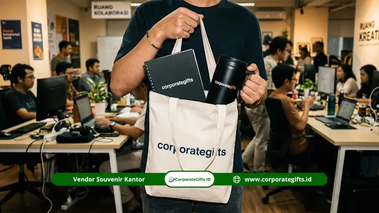

Corporate Gifts ID - Jenis souvenir terbaik untuk mitra sekolah swasta mencakup produk fungsional seperti tumbler dan tas branded untuk penggunaan harian, perangkat teknologi seperti powerbank dan USB flash drive untuk lingkungan profesional, serta souvenir dekoratif berupa plakat penghargaan dan mug keramik untuk momen seremonial resmi. Menentukan pilihan yang tepat sangat bergantung pada klasifikasi segmen mitra, mutu fisik cinderamata, serta konsistensi identitas visual institusi sekolah.
Poin Kunci Pemilihan Souvenir Mitra Sekolah:
- Eksposur Harian: Souvenir fungsional (tumbler stainless dan tote bag kanvas) memberikan visibilitas brand institusi secara berkelanjutan.
- Relevansi Profesional: Gadget teknologi (powerbank custom dan USB flash drive) sangat dihargai oleh mitra industri dan korporat rekanan.
- Simbol Apresiasi Formal: Plakat penghargaan akrilik atau kayu menjadi wujud resmi keberhasilan kemitraan saat seremoni MoU.
- Akurasi Segmentasi: Mengelompokkan mitra berdasarkan profil memudahkan penyesuaian jenis produk dan anggaran pengadaan.
- Standar Reputasi: Kualitas material produk yang awet secara langsung mencerminkan kredibilitas dan profesionalisme sekolah swasta.
Kemitraan strategis antara sekolah swasta dengan pihak luar, seperti dunia industri (DUDI), perguruan tinggi, perbankan, dan instansi pemerintahan, membutuhkan perlakuan khusus. Souvenir bukan sekadar buah tangan seremonial, melainkan jembatan komunikasi yang merawat relasi kerja sama jangka panjang.
Mengapa Pemilihan Jenis Souvenir Sangat Menentukan?
Jenis souvenir yang dibagikan secara langsung menggambarkan standar kualitas dan nilai profesionalitas sekolah swasta di mata para pemangku kepentingan. Cinderamata yang tidak terkonsep dengan baik atau berkualitas rendah dapat menimbulkan kesan kurang apresiatif. Sebaliknya, produk yang dikurasi secara cermat mampu menumbuhkan rasa bangga dan mempererat ikatan kemitraan.
Berdasarkan riset industri dari Promotional Products Association International (PPAI), sebanyak 76% penerima corporate gift menyatakan bahwa mutu fisik produk sangat memengaruhi persepsi positif mereka terhadap institusi pemberi. Oleh sebab itu, institusi pendidikan swasta modern wajib memilih vendor yang mampu menghadirkan produk dengan standar kontrol mutu tinggi.
Apa Saja Souvenir Fungsional untuk Mitra Sekolah Swasta?
Souvenir fungsional adalah kategori produk yang dapat digunakan secara aktif dalam rutinitas kerja harian oleh perwakilan mitra. Tiga opsi teratas yang terbukti efektif adalah tumbler berinsulasi, tote bag eksklusif, dan buku catatan agenda.
1. Tumbler dan Botol Minum Branded
Tumbler custom merupakan opsi souvenir terpopuler di lingkungan akademis dan korporat. Selain mendukung gerakan ramah lingkungan untuk mengurangi sampah plastik sekali pakai, produk ini selalu dibawa ke meja rapat maupun perjalanan dinas.
Penggunaan material tumbler stainless steel SUS304 food-grade berinsulasi thermal memberikan kesan prestisius. Logo sekolah yang diaplikasikan lewat teknik laser engrave menghasilkan tampilan yang rapi, elegan, dan tahan lama seumur hidup.
2. Tas Kanvas dan Tote Bag Eksklusif
Tote bag bermaterial kanvas premium atau katun drill tebal sangat cocok dibagikan saat acara penandatanganan kerja sama, seminar edukasi, atau kunjungan kemitraan. Tas ini dapat menampung dokumen berkas MoU, kalender sekolah, serta merchandise pendukung lainnya.
3. Buku Catatan dan Planner Premium
Buku catatan hardcover dengan sampul kulit sintetis (PU leather) dan teknik deboss logo sekolah menunjukkan kepedulian institusi terhadap produktivitas mitra. Dilengkapi dengan pita pembatas dan kantong selip dokumen di bagian belakang, notebook ini sangat fungsional bagi para profesional.
Tabel Rekomendasi Souvenir Mitra Sekolah Swasta
Berikut matriks perbandingan jenis souvenir kemitraan sekolah swasta berdasarkan kategori, nilai guna, dan momen serah terima yang tepat:
| Kategori Souvenir | Contoh Produk Unggulan | Kelebihan & Manfaat | Momen Penggunaan Paling Tepat |
|---|---|---|---|
| Fungsional Harian | Tumbler Stainless SUS304, Tote Bag Kanvas | Eksposur brand setiap hari, mendukung program eco-school | Kunjungan studi, lokakarya, dan pertemuan kerja berkala |
| Teknologi Digital | Powerbank 10.000 mAh, USB Flash Drive, Wireless Charger | Bernilai persepsi tinggi, relevan dengan gaya hidup mobile modern | Apresiasi mitra industri magang dan sponsor utama |
| Dekoratif Resmi | Plakat Akrilik Kombinasi Kayu, Plakat Kristal Logam | Simbol kehormatan resmi, dipajang di ruang pimpinan mitra | Penandatanganan MoU dan perayaan Dies Natalis sekolah |
| Stationery Kantor | Agenda Kulit Deboss, Pulpen Metal Laser Engrave | Praktis untuk pencatatan rapat, biaya terjangkau berkelas | Rapat koordinasi kurikulum dan seminar tahunan yayasan |

Kurasi cinderamata resmi dan merchandise edukasi untuk mempererat kerja sama institusi sekolah swasta.
Apa Saja Souvenir Teknologi untuk Mitra Sekolah Swasta?
Merchandise berbasis teknologi mencerminkan sekolah swasta yang adaptif, inovatif, dan berorientasi ke masa depan. Kategori ini sangat disukai oleh pimpinan industri teknologi, instansi perbankan, serta vendor penyedia solusi digital.
1. Powerbank Custom Branded
Powerbank dengan kapasitas 10.000 mAh ke atas yang dilengkapi indikator baterai LED dan fitur pengisian daya cepat (fast charging) adalah pilihan serbaguna. Area casing permukaannya cukup lapang untuk memuat logo sekolah, visi institusi, serta ornamen visual ciri khas sekolah.
2. USB Flash Drive Custom
Flashdisk berbahan metal atau kayu bambu ramah lingkungan dengan kapasitas 32 GB hingga 64 GB dapat difungsikan ganda. Tim humas sekolah dapat menyisipkan profil video institusi, brosur digital penerimaan siswa baru, atau dokumen laporan kerja sama sebelum dibagikan.
3. Wireless Charger Pad Branded
Dudukan pengisi daya nirkabel adalah hadiah meja kerja yang sangat elegan. Mitra dapat meletakkan smartphone mereka di atas charger pad ini di ruang kantor, sehingga nama dan identitas sekolah swasta Anda senantiasa terlihat setiap waktu.
Apa Saja Souvenir Dekoratif dan Kenangan untuk Mitra?
Souvenir dekoratif mengedepankan nilai simbolis penghormatan dan kenang-kenangan abadi. Jenis ini sangat lazim diserahterimakan pada sesi foto protokoler di hadapan awak media atau undangan formal.
1. Plakat Penghargaan Custom
Plakat penghargaan menjadi cinderamata paling representatif untuk penandatanganan nota kesepahaman (MoU). Perpaduan material akrilik bening tebal dengan dudukan kayu jati atau aksen pelat kuningan memberikan wibawa tersendiri saat dipajang di lemari etalase pimpinan mitra.
2. Mug Keramik Branded
Mug keramik berlapis enamel atau finishing matte dengan paduan warna seragam identitas sekolah adalah cinderamata yang ramah anggaran namun memiliki nilai keakraban tinggi saat digunakan untuk menikmati kopi pagi di meja kantor.
Bagaimana Memilih Jenis Souvenir Berdasarkan Segmen Mitra?
Tidak semua mitra memiliki profil dan kebutuhan yang sama. Melakukan segmentasi penerima akan membantu sekolah memaksimalkan dampak dari anggaran yang dialokasikan:
- Mitra Korporat & Industri: Paling tepat menerima paket gift set eksklusif seperti powerbank, tumbler thermal stainless SUS304, serta plakat penghargaan resmi.
- Mitra Instansi Pemerintahan / Dinas Pendidikan: Sangat sesuai diberikan plakat penghargaan formal, buku agenda kulit dengan pulpen metal grafir, atau cangkir keramik elegan.
- Mitra Perguruan Tinggi & Dosen Tamu: Cocok menerima paket paket seminar kit, USB flash drive berkapasitas besar, dan tote bag kanvas ramah lingkungan.
- Mitra Yayasan, Komunitas & Alumni: Cukup efektif dengan produk fungsional bernilai kebersamaan seperti tumbler custom dan payung lipat berkualitas.
Apa yang Perlu Dipertimbangkan Sebelum Memesan Souvenir?
Agar proses pengadaan cinderamata sekolah berjalan lancar dan bebas kendala administratif, tim pengadaan yayasan disarankan memperhatikan lima panduan praktis berikut:
- Tetapkan Tujuan dan Momen Penyerahan: Pastikan apakah cinderamata ditujukan untuk MoU tahunan, perpisahan siswa, hari guru, atau penyambutan tamu kehormatan.
- Petakan Jumlah Penerima: Buat daftar nama dan jabatan delegasi mitra agar dapat disiapkan personalisasi khusus jika diperlukan.
- Alokasikan Anggaran Secara Berjenjang: Pisahkan antara budget cinderamata VIP untuk direksi rekanan dan paket massal untuk peserta umum.
- Verifikasi Kualitas Sampel (Mockup): Mintalah contoh fisik atau simulasi visual digital kepada vendor sebelum menyetujui cetak massal.
- Perhatikan Legalitas Faktur dan Pajak: Pastikan vendor pengadaan menyediakan invoice resmi dan dokumen pendukung sesuai regulasi perpajakan yayasan.
Kesimpulan
Menentukan jenis souvenir terbaik untuk mitra sekolah swasta membutuhkan keseimbangan antara nilai manfaat fungsional, prestise visual, dan ketepatan momen penyerahan. Dengan menghadirkan cinderamata bermutu tinggi, sekolah swasta Anda tidak hanya membangun reputasi akademis yang gemilang, melainkan juga menjaga jalinan kemitraan strategis yang solid dan berdaya guna tinggi.
Kunjungi katalog merchandise CorporateGifts.ID untuk melihat koleksi cinderamata institusi pendidikan siap kustom atau diskusikan kebutuhan pengadaan sekolah Anda bersama tim kami.
FAQ: Souvenir untuk Mitra Sekolah Swasta

Ditulis oleh: Arinda Zakia
Senior Corporate Gifting SpecialistSpesialis kurasi merchandise kelembagaan, paket souvenir wisuda, dan hadiah kemitraan institusi pendidikan di CorporateGifts.ID dengan pengalaman lebih dari 7 tahun.
Lihat Profil Lengkap & Panduan Lainnya